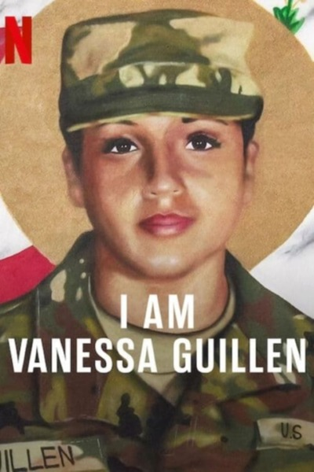

Info:
!!! Remember I don't own or edit anything on links that might be on this torrent!!!
I.Am.Vanessa.Guillen.2022.720p.WEBRip.800MB.x264-GalaxyRG[TGx]
IMDB - https://www.imdb.com/title/tt22440764
Upload provided by TorrentGalaxy
Visit us @ https://torrentgalaxy.to
-----------------------------------------------------------------------------------
GENERAL INFO
Genre : Documentary
Director : Christy Wegener
Stars :
Plot : A young woman dreamed of a military career. In 2020, however, after telling her mother she was being sexually harassed on the Fort Hood army base, Guillen was murdered by a fellow soldier. Her story sparked an international movement of assault victims demanding action. The project follows her family’s fight for historic reform, a journey that takes them to the Oval Office.
Included subtitles
English, English, Arabic, Chinese, Chinese, Croatian, Czech, Danish, Dutch, Spanish, fil, Finnish, French, German, Greek, Hebrew, Hungarian, Indonesian, Italian, Japanese, Korean, Malay, Norwegian, Bokmal, Polish, Portuguese, Portuguese, Romanian, Russian, Spanish, Swedish
-----------------------------------------------------------------------------------
COVER
